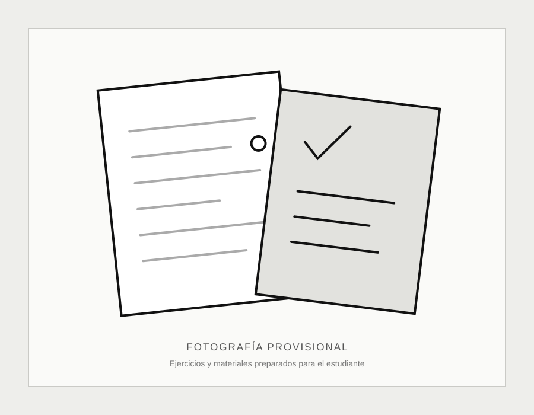

Experiencia y trato humano
Sobre Erik Estrella
Comencé a ayudar a otras personas con matemáticas a los 14 años. Actualmente, a los 31 años, cuento con más de 17 años de experiencia explicando, resolviendo problemas y creando materiales.

Mi relación con las matemáticas
No solo las enseño: las uso
Mi relación con las matemáticas no se limita a enseñarlas. Utilizo conocimientos matemáticos en proyectos, programación, análisis, herramientas digitales y situaciones de la vida cotidiana.
He trabajado con estudiantes, docentes y personas de distintos lugares. Mi forma de enseñar busca combinar conocimiento, paciencia, trato humano y tecnología.
Una idea central
“No solo enseño matemáticas: hago matemáticas.”
Compromiso
Lo que puedes esperar de mí
Un acompañamiento profesional, claro y adaptado al trabajo que cada estudiante necesita.
- Paciencia.
- Explicaciones adaptadas.
- Trato respetuoso.
- Materiales personalizados.
- Sinceridad sobre el nivel y el trabajo necesario.
- Uso responsable de tecnología.
Sesiones y materiales
El trabajo en contexto
Marcadores provisionales para las fotografías que documentarán las explicaciones, herramientas y materiales.


Contacto directo
Conversemos sobre el tema que necesitas trabajar
Consulta la disponibilidad de asesorías particulares a domicilio en Mérida, Yucatán.
Escribir por WhatsApp